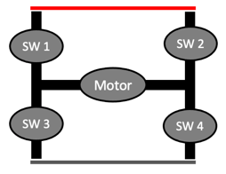

H-Bridge Circuit
Copy this iframe to your website:
1 | |
Run the H-Bridge Circuit MicroSim Fullscreen
Description
An H-bridge is a circuit that lets a robot run a motor forward or backward. It uses four switches arranged like the letter "H," with the motor in the middle bar. Closing two switches on opposite corners sends current through the motor one way. Closing the other two corners sends current through it the other way.
In this MicroSim, each switch is a knife switch, which is a metal blade on a hinge. When the blade drops into its clip, the switch is closed (ON) and current can pass. When the blade swings out, the switch is open (OFF) and current stops.
How to Use It
- Click any switch on the drawing to flip it ON or OFF. You can also press the keys 1, 2, 3, and 4.
- Press Forward, Stop, or Reverse below the drawing to set all four switches at once. The keys F, S, and R do the same thing.
- Move your mouse over the MicroSim to run the animation. It pauses when your mouse leaves, so it won't distract you while you read.
- Read the message under the circuit. It tells you what your switches are doing to the motor.
The switches are numbered in reading order: S1 is top-left, S2 is top-right, S3 is bottom-left, and S4 is bottom-right.
What the Colors Mean
| What you see | What it means |
|---|---|
| Solid red wire across the top | The +5V power wire |
| Solid black wire across the bottom | The GND (ground, 0 volts) wire |
| Green dots flowing | Forward current: S1 and S4 are closed and current goes left to right through the motor |
| Purple dots flowing | Reverse current: S2 and S3 are closed and current goes right to left through the motor |
| Green circle arrows | The motor spins clockwise |
| Purple circle arrows | The motor spins counterclockwise |
| Wide red wires flashing | A short circuit: power is flowing straight from +5V to GND |
The dots show conventional current, which engineers draw flowing from + to −. (Electrons really drift the other way, but we use the + to − rule on every circuit drawing.)
Watch Out for Shorts!
 Never close both switches on the same side, like S1 and S3. That makes a path from +5V straight to GND with no motor in the way. Real motor driver chips have protection so our code can't do this by accident.
Never close both switches on the same side, like S1 and S3. That makes a path from +5V straight to GND with no motor in the way. Real motor driver chips have protection so our code can't do this by accident.
What to Try
- Close only S1. Why doesn't the motor turn?
- Close S1 and S2. Both motor wires now touch +5V. With no difference in voltage, no current flows, so the motor stays still.
- Press Forward and then Reverse. Trace the dots with your finger. Which parts of the path change, and which stay the same?
Here is the same circuit drawn as a simple block diagram. Try matching each box to a switch in the MicroSim.

The H-bridge lets the same motor spin in both directions.
Lesson Plan
Learning Objectives
After using this MicroSim, students will be able to:
- Explain (Understand) how closing diagonally opposite switches (S1 + S4 or S2 + S3) sets the direction of current through a DC motor.
- Predict (Apply) the motor's direction, or lack of motion, for any combination of the four switches.
- Analyze (Analyze) a switch combination to decide whether it drives the motor, stops it, or creates a short circuit (shoot-through).
- Relate (Understand) the four switches to the transistors inside the robot's motor driver IC.
Target Audience
Students in grades 8–12 with no prior electronics background. The MicroSim also works as a quick visual reference for instructors introducing motor drivers.
Prerequisites
- A circuit needs a complete loop from + to − for current to flow.
- A DC motor reverses direction when the two motor wires are swapped (see Motor Direction).
- The terms open and closed as applied to a switch.
Time and Materials
- Time: 15–20 minutes
- Materials: One device with a web browser per student or pair; a printed or whiteboard copy of the switch-combination table below.
Activities
- Predict, then test (5 minutes). Load the MicroSim with all switches open. Ask students to predict which two switches must close to make the motor spin, and to write the prediction down before clicking anything. Students then click switches on the canvas to test the prediction.
- Trace the current path (3 minutes). Students press Forward and trace the green dots from +5V to GND, naming each switch the current passes through. Repeat with Reverse and the purple dots. Ask: which wires carry current in both directions?
-
Complete the switch table (7 minutes). In pairs, students test each two-switch combination and record the result.
Closed switches Motor result S1 + S4 S2 + S3 S1 + S2 S3 + S4 S1 + S3 S2 + S4 -
Find every short (3 minutes). Students identify every combination that flashes red and state a single rule that predicts all of them ("both switches on the same leg closed").
- Connect to the robot (2 minutes). Explain that the Cytron Maker Pi RP2040's motor driver chip contains an H-bridge built from transistors instead of knife switches. Our MicroPython code picks which transistors turn on, and the chip's built-in protection prevents shoot-through.
Differentiation
- Support: Have struggling students use only the Forward, Stop, and Reverse buttons first, then change one switch at a time from a working state.
- Extension: Ask advanced students why S1 + S2 or S3 + S4 is called braking, and how braking differs from simply opening every switch (coasting).
Assessment
Use these as an exit ticket or quick formative check:
- Which two switches make the motor spin clockwise in this MicroSim? (S1 and S4)
- A student closes S2 and S4. What happens, and why is it dangerous for a real circuit? (Short circuit: +5V connects straight to GND, which can overheat wires, drain the battery, or destroy the switching transistors.)
- S3 and S4 are closed and the other two are open. Is the motor spinning? Explain. (No. Both motor wires connect to GND, so there is no voltage difference across the motor.)
- Sketch the H-bridge and draw arrows showing the reverse current path. (+5V → S2 → motor right to left → S3 → GND)
Version History
This MicroSim was first built by hand from a short text prompt, with three buttons and animated wires. The current version adds clickable switches, short-circuit detection, direction-colored current, and a spinning motor. The original hand-coded version is saved in this repository's git history.
The original prompt and the generated response
Generate a single p5.js sketch file.
Draw an H-bridge circuit for reversing the direction of a DC motor.
Have three state buttons for "Forward", "Stop" and "Reverse".
Place the positive power rail at the top of the circuit.
Place the negative rail at the bottom of the circuit.
Place the motor in the center of the H-brige ciricut.
Animate the motor moving clockwise for the Forward state.
Animate the motor going counter-clockwise for the Reverse state.
Make the motor stopped for the Stop state.
Have the upper left and lower right wires animate current for the Forward state.
Have the upper right and lower left wires animate current for the Reverse state.
Turn off all wire animation for the Stop state.
Create four knife switches.
Have the upper left and lower right be closed for Forward.
Have the upper right and lower left be closed for Reverse.
Have all the switches be open for Stop.
Use the following function to draw current in a wire:
function drawAnimatedWire(x1, y1, x2, y2, speed1, state) {
if (state) {
let distance = dist(x1, y1, x2, y2);
let circlePos = map((millis() * speed1) % distance, 0, distance, 0, 1);
// lerp generates the percent between two values
let x = lerp(x1, x2, circlePos);
let y = lerp(y1, y2, circlePos);
stroke(0);
strokeWeight(lineWidth)
line(x1, y1, x2, y2); // Draw the wire
fill(255, 0, 0);
noStroke();
circle(x, y, 10); // Draw the moving circle (electron)
} else {
stroke(0);
strokeWeight(lineWidth)
line(x1, y1, x2, y2); // Draw the wire
}
}
Response:
1 2 3 4 5 6 7 8 9 10 11 12 13 14 15 16 17 18 19 20 21 22 23 24 25 26 27 28 29 30 31 32 33 34 35 36 37 38 39 40 41 42 43 44 45 46 47 48 49 50 51 52 53 54 55 56 57 58 59 60 61 62 63 64 65 66 67 68 69 70 71 72 73 74 75 76 77 78 79 80 81 82 83 84 85 86 87 88 89 90 | |
References
- H-bridge - accessed 2026-09-29 - Wikipedia - How four switches around a load reverse the current, including the shoot-through (short circuit) condition this MicroSim flashes red.
- Knife switch - accessed 2026-09-29 - Wikipedia - Background on the hinged-blade switch drawn in the MicroSim.
- Short circuit - accessed 2026-09-29 - Wikipedia - Why a low-resistance path from + to − is dangerous for batteries, wires, and transistors.
- Electric current - accessed 2026-09-29 - Wikipedia - Explains conventional current direction, which the flowing dots follow.
- DC motor - accessed 2026-09-29 - Wikipedia - How reversing the voltage across a brushed DC motor reverses its rotation.
- Motor Direction - STEM Robots - Lesson on reversing the robot's motors, with the same S1–S4 switch states.
- H-Bridge - STEM Robots - Lesson introducing the H-bridge circuit.
- p5.js Reference - accessed 2026-09-29 - p5.js - Documentation for the JavaScript library used to build this MicroSim.